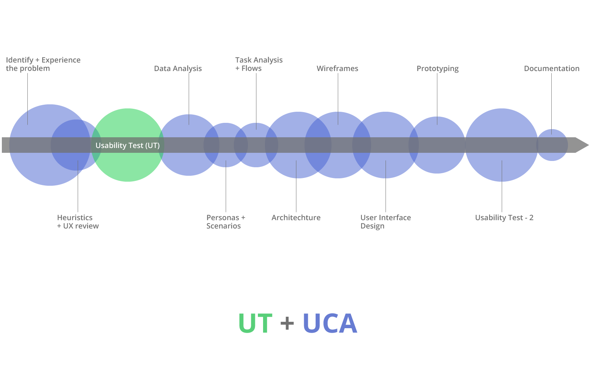

Background:
A mobile platform for enabling simplified follow-ups, remote consultations, and managing patient heath records. DrPrax has been carefully designed with simplicity in mind to help doctors and patients intuitively use the app.
- Client:
- Proost Solutions
- Services:
Strategy, UX Research, UX Design
- Project Link:
- GooglePlay & AppStore
Motivation:
Patients who are associated with specialist doctors for longer tenure,
regularly ask for assistance on communication mediums like SMSs, WhatsApp, or phone calls anytime.
Doctors are unable to attend and manage such requests.
Challenge:
No research done on problem & design, pre- and post-launch by the client team.Lack of detailed analytical data available. Development process was engineering-centric and work done was undocumented. Design team of one designer. Two months of time-budget.
Success Metrics
- Consultation using phone at doctor’s convenience.
- Decline in patient phone calls and messages through SMSs & WhatsApp.
- Enable the doctors to control the relationship on the app.
- Make patients feel the convenience and safety in reaching out to their doctor anytime.
- Decline in help-desk calls from users to resolve mobile app issues.
Process: UT + UCA
I had to create a custom design process consisting of Usability Testing and then User-centered Analysis, since I had joined the development team mid-release-cycle of Phase-2 of the product.

I took an informed decision to identify problems in the existing design by conducting usability tests and then begin UCA for a proactive analysis of the actual problem.
Stakeholder Interviews
Implementing an idea is always easier than solving a problem. Therefore, my first task was to know the work process of stakeholder team.
Why:
Apart from their process, another goal was to check for any inconsistency in problem understanding within the team, additional perspectives, and their work challenges.
How:
Due to time constraint put on me, I decided to conduct groups interviews—development team group of 5 and management group of 3 people who made all the decisions—coupled with individual kick-off interview with one Business Analyst in the team.
Redesign Strategy
- 1. Executive Intent:
- Reach out to 20,000 specialist doctors who are daily users of the system, by next three years.
- 2. Market Segment:
- Long term & chronic disease specialist doctors. Their patients are secondary segment.
- 3. General tasks:
- Chat, Call, Medical Reports.
- 4. Constraints:
- Medico-legal compliances, cloud data storage, data privacy, tablet form-factor, guidelines for hybrid mobile app-design, brand colors.
- 5. Branding Goals:
- Safety, Security, Medico-Legal compliant. Nurtures and help grow doctor-patient long-term relationship. Users have confidence in the data.
- 6. Success Factors/Usability Criteria:
- Patients can add the doctors they consult. Doctors are able to follow-up consultations on the app. Users chat or call daily. Patients are able to manage their health data, reports & prescriptions. Doctors can access reports of Patients when chatting or on call. 25% increase in doctors prescribing medicines or consulting on app. Decreased customer service phone calls by 50% by making the design as intuitive as possible.
Result:
- Stakeholder interviews revealed that the product was feature and opinion-driven. It was currently catering to maternity hospital doctors only.
- Features were decided based on demands from handful of doctors.
- The focus of development team was majorly on number of released features per week or debugging.
Heuristics & Review
Heuristic Evaluation
To objectively judge the design decisions made & put the design through heuristics rules of thumb.
UX Review
To peek into nooks and corners of the existing system and its context of functioning. To find gap between what is implemented and what the problem is. That way I would be able to define the actual case for the problem.
Result:
- Heuristic evaluation and UX review revealed that the system design breaches basic design rules and laws.
Experiencing the problem with users
I visited hospitals and clinics to know the problem first-hand alongside 5 doctors and patients each. The goal was NOT to use the app, but to experience the problem we were trying to solve.
Result:
- I witnessed & observed doctors attending to calls or messages from patients.
- The doctors could not avoid the calls and messages and were ethically compelled because of the relationship with patients.
- Patients call either the doctors or a delegated person at random hours of the day for smallest of their problems and expect elaborate discussions.
- The other obstacle is that of medico-legal laws that refrain them from consulting and prescribing via mobile phone.
Marketing pamphlets of DrPrax app put on walls at various hospitals difficult to notice. The pamphlets have doctor's code which patient puts in the app.
Usability Testing (UT)
“Users often act in ways that deviate from how they say they will act.”
Though the first version of product was already live, I decided to conduct Formative Usability Test (UT) on existing designs to determine if specific design objective is met, look for design bugs, and validate design decisions.
The approach of this test was more of small scale qualitative one.
This approach would mean opportunities for observation, can suffice with small sample size, and answer the “WHY” questions.
Techniques like audio recordings, screen recordings, in-person Interviews & observations etc. were used.
Objective of UT:
Feedback from users’ Goal-directed behavior.
Hence, emphasis was on performing tasks.
Focus of UT:
Navigation, Presentation, Content and Interaction
Data from usage statistics, stakeholder, and mutual decision decided what type of people to recruit. Participants cannot have same behavior. The goal was to get a good mix of the user-group: Ignorant of domain to one who understands, novice user of current system to expert, minimal computer user to expert user of computer.
The Law of Diminishing Returns!
There are only finite number of issues in a design. More participants recruited in a UT did not mean we find more issues. In fact, multiple rounds of smaller tests will yield better cost/benefit than one with 30 users.
I decided I would use the general rule of 10-participant group per persona for the first round and improvise based on data observed for the next. This decision was also driven by the less time allotted to me.
Observations
Personas
User Scenarios
Tasks & Task Analysis
Tasks from current system were diagnosed for their sequences, dependencies, repetitions, and information needed, to see if and how they support user scenarios.
Optimizing task flows
Tasks were redefined & improved by eliminating unnecessary steps, complexities, redundant activities, poor function allocation, bottlenecks, etc.
- 1. Schedule:
- Doctors do not schedule meets/visits themselves; a delegated person does the job. Moreover, scheduling feature was rarely used by a couple of doctors only.
- 2. Repetitive placement:
- Payments and Patients options from home screen were same as those on bottom navigation.
- 3. Initiate Chat:
- Task flow had unnecessary steps and involved learning curve that was complex. Performance tasks & data from the internal team revealed users had difficulty understanding how to add person to chat with.
Architecture
- 1. Navigation:
- A navigation system developed from task flow outlines & primary noun table.
- 2. Labels:
- Improved labels and words used to mimic user’s vocabulary. E.g. Chats, consultations, chat sessions were used to mean “Chats” interchangeably on different screens.
- 3. Organization:
- Labels that hid important functionalities were identified are rearranged. E.g. Settings had Payments functionality inside.
Wireframes
Interface Design
Using the VIMM Model to reimagine the interface for all tasks.
Visual
The goal here was to help people notice and understand visual changes on screen.
Older interface was cluttered and users spent much time staring at screen trying to understand it.
Hence, to minimize the visual work in scanning the display and aid in quicker decision making:
Improving the text’s perceived size, appropriate overall contrast, UI elements needing more space to help them “breathe”,
redesigning form of the components to add beauty.
Intellect
The dashboard had too many elements asking for attention.
As the app was ill structured, dashboard was created with a hope users will understand it as a panel that serves entries to all tasks.
No Dashboard!
"Why should a chat app have a dashboard?", said users.
The dashboard concept created a conflict with user's idea of how a chat app must work.
Memory
Both users would be operating under stressors of time, especially the patient user who would also be under stressors like anxiety and perceived danger when in need of consultation.
These stressors cause cognitive narrowing, make Short Term Memory less effective and people perform unsuccessful task again and again.
Designing in a way which helps users to improve memory and aid in learning the app.
Motor
Observing users perform tasks and the evidences from screen recordings revealed efforts in tapping buttons/icons for some tasks. Hence, improving touch targets to minimize motor load.
Impact
Direct Impact
- 2020: DrPrax selected as top 20 among women-led tech Start-ups for Virtual Incubation Program for Women Entrepreneurs.
- DrPrax is the only doctor mobile app to be approved and endorsed by the Indian Medical Association for use under well-defined guidelines and usage scenarios.
- Few to none daily help-desk calls.
- Increase in daily active users.
Ancillary Impact
Built a work team that values the user-centered process, which is helping with “change management” when introducing new ideas.